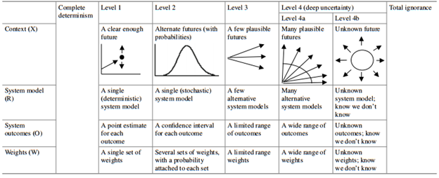
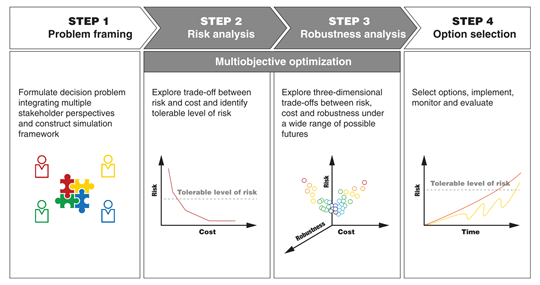
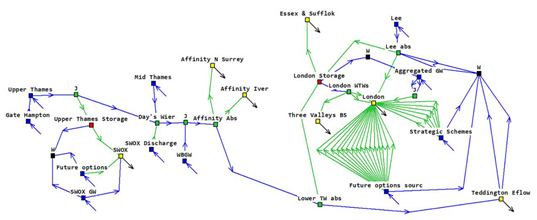
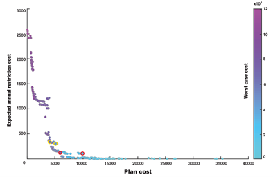

This lecture introduces decision theory under conditions of imperfect or incomplete information. We will cover how to define and categorise uncertainties relevant to specific decision problems. After introducing the basic components of frameworks within decision theory under uncertainty, we will run through an illustrative example.
Making decisions about infrastructure and environmental systems necessitates a process to anticipate and manage change. Nowadays this process is becoming increasingly complicated. Populations are changing rapidly, technological development is accelerating at an unprecedented pace, and climate change is a serious operational risk to be managed. For instance, think of how energy sector managers need to ensure reliable future supplies of electricity for a growing population whilst decarbonising supply sources, as well as managing the impacts from climate change and rapidly changing regulation. Such complexities extend to all infrastructure systems.
These issues are defined by uncertainty. We can simply define uncertainty as a situation involving imperfect or unknown information about the past, present, or future events. For a decision-maker, uncertainty represents the gap between the best information available to them and the knowledge they would need in order to make the best choice (Marchau et al. 2019). Decision-making under uncertainty (DMUU) is a rich and developed field that is concerned with making the best possible choices based on imperfect or incomplete information. It has come to be recognised as an important aspect in planning and managing infrastructure systems.
In order for us to manage uncertainty when making decisions, it is important to first identify the types of uncertainties that we are dealing with. We can define two extremes of uncertainty: complete determinism and total ignorance, within which four levels of uncertainties exist (Walker et al. 2003).

Figure 14.3.1: Levels of uncertainty (Marchau et al. 2019)
Figure 14.3.1 summarises these categorises of uncertainties. Complete determinism refers to a state of total uncertainty and is almost unattainable. Level 1 uncertainty relates to those conditions in which historical data can be reasonably assumed as predictors for the future. Examples of this might include operational conditions (e.g. number of scheduled maintenance days) and asset parameters (e.g. power plant efficiency). Meanwhile, Level 2 uncertainties are those that can be defined adequately through probabilistic models describing the system. The total solar irradiance over a solar energy farm is an example of a Level 2 uncertainty. Level 3 uncertainties cannot be described in a probabilistic sense nor can they be safely assumed as identical to historical observations. However, they can be defined to fall within a range of plausible futures and hence can be treated with scenario analysis. For example, rate at which population changes in a given region is a Level 3 uncertainty. Level 4 uncertainties are the deeply uncertain factors that can only be captured with a vast range of plausible assumptions (4a), such as electricity prices, or those that have no known future (4b), such as a global financial crisis.
In any case, the first step in dealing with uncertainties is to list and categorise each uncertainty relevant to a decision problem. This allows us to define the best approach to handle the given uncertainty.
Recent times have witnessed a proliferation in the number of methodologies developed for decision-making under uncertainty. The most common examples include robust decision-making (RDM) (Lempert, Popper, and Bankes 2010), decision scaling (Brown et al. 2012), real options analysis (De Neufville, Scholtes, and Wang 2006), dynamic adaptive policy pathways (Haasnoot et al. 2013), and info-gap analysis (Ben-Haim 2006). Whilst each of these methodologies have their own nuances and jargon, they all share a common set of tenets (Hall et al. 2020), in that they all:
Extensively test a broad range of uncertainties to which a system might be exposed
Emphasise the use of multiple objectives in the planning problem
Identify solutions that are robust to uncertainties.
In other words, investment plans are rigorously stress-tested to the range of uncertainties defined in the problem formulation stages, as detailed in the previous section. The results from these stress tests are evaluated against multiple performance criteria (see mini-lecture 14.2). Finally, analysis and decision-makers identify strategies that are robust, in that they perform adequately well in relation to multiple objectives across a range of scenarios and uncertainties—referred to as satisficing solutions. The emphasis on robustness is a distinguishing feature of decision theory under uncertainty. There is a widespread recognition that no ‘best’ or ‘optimal’ option exists. Rather, it is argued that decision-makers ought to go beyond this frame of thinking to identify robust solutions, which can perform acceptably under numerous possible states of the world.
Let us illustrate decision theory under uncertain conditions through an example. Building on the contents of mini-lecture 14.2, consider a planning problem in which we wish to ensure safe and reliable water supplies over the next three decades. Using a generic for decision-making under uncertainty, our methodology could be partitioned into the four steps outlined by Figure 14.3.2. First, we need to formulate the decision problem, where the crucial first step is to identify and label uncertainties. For our specific problem, the following uncertainties can be identified:
Water demands (Level 3)
Hydrological variability (Level 2)
Electricity prices (Level 4a)
Groundwater abstraction licences (Level 1)
Water system operational parameters (Level 1).
Of course, stakeholders might identify additional uncertainties but the above will suffice for this illustrative example.

Figure 14.3.2: Levels of uncertainty (Borgomeo et al. 2018)
The next stage of problem formulation is to create a computer model representation of the water system. Here, it is common for decision-makers to deploy simulation models, which are a digital representation of a real-world system. A simulation model is a handy instrument in the planner’s toolbox as it allows us to conduct thousands of simulations of alternative strategies over a vast range of scenarios. Hence, we can exhaustively stress-test each strategy to see what happens (severity) and for how long (duration).
Figure 14.3.3 shows an example simulation model of a water system in the Thames basin, England, using the WATHNET modelling software. The use of such models is widespread in infrastructure planning and management.

Figure 14.3.3: An example simulation model constructed for the Thames basin, England, using the WATHNET platform
Once we have constructed a system model and formulated a set of uncertainties and options, we can begin conducting vast number of simulations in an iterative fashion. This yields a large results database containing a set of robust strategies and their associated trade-offs.
In our example, by processing the results we could produce a curve similar to that presented in Figure 14.3.4. In this curve, we are visualising the trade-offs between three objectives: cost (x-axis), water shortage risks (y-axis), and plan robustness (colour bar; increasing scale represents decreasing robustness).
This curve—known as the Pareto frontier—shows a set of solutions that are equally efficient in that the performance of one objective cannot be improved without harming the performance of another objective. Each point on the Pareto frontier represents a unique water investment plan. For example, the point on the far-right of the x-axis represents an investment plan with all options selected, and hence it is the most expensive option from a cost perspective. Generally, Figure 14.3.4 shows that increasing the total investment in strategies will decrease water security and enhance robustness.

Figure 14.3.4: Trade-off curve between cost, water security, and robustness (Borgomeo et al. 2018)
As previously discussed, decision-making under uncertainty does not seek to find any elusive ‘optimal’ solution. Rather, our objective is to find a set of solutions that are efficient in relation to the defined uncertainties, which are shown by the Pareto frontier.
Decision-makers can evaluate the frontier and pick solutions for further investigation that meet their risk thresholds with regards to the three objectives. In this example, the solutions circled in yellow and red were analysed further.
Making decisions under uncertainty is an inherent part of infrastructure planning. Whilst it is nearly impossible for us to gain perfect information, it is possible for us to manage uncertainties when making decisions. This lecture introduced fundamental concepts within decision theory in conditions of imperfect or partial information. We highlighted the concept of robustness, which seeks to identify options that perform adequately across a range of uncertain conditions.